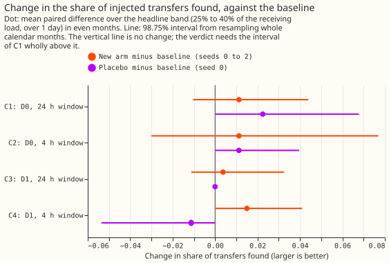
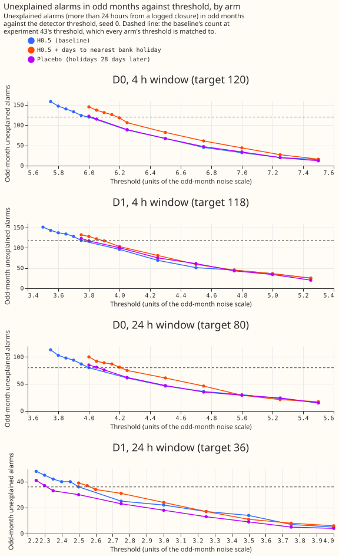

Experiment 47: does a bank-holiday column in the demand model help the LSC find transfers?
The result is inconclusive: adding a bank-holiday column to the demand model raised the share of simulated load transfers the detector found by +0.011 (98.75% interval -0.010 to +0.044), and the experiment is too small to tell that from zero. The demand model is an XGBoost model (a gradient-boosted decision-tree model) that predicts the power drawn at each of 16 Primary substations (substations that step power down to the local distribution network) from the weather. The detector raises an alarm when the average difference between measured and predicted power over 24 hours steps up or down, which can mean that load moved to or from another substation. Demand drops on bank holidays, the model did not expect the drop, and the drop looks like such a step. We refitted the model with one extra column, the number of days to the nearest bank holiday, and added 600 simulated transfers to the real readings. We set each model's alarm threshold so that both raised about the same number of alarms in odd-numbered months that the switching log (the operators' record of planned network switching) does not explain. We then counted how many of the 89 simulated transfers that start in even-numbered months, move 25% to 40% of the receiving substation's load, and last over 1 day the detector found. A transfer counts as found when the detector places its start within 2 hours and its end within the larger of 6 hours and 10% of its duration. The result covers only the route through the threshold: the injected transfers lie at least 2 days from any alarm of the baseline model, so the column could help only by letting the threshold fall.

Verdict
C1, the new model minus the baseline model in the share of the 89 transfers found, is +0.011 (98.75% interval -0.010 to +0.044), so the verdict is inconclusive. The baseline is H0.5, the demand model of experiment 17 (trained on ERA5 estimates of past weather, with a half-life of 0.5 years, refitted every month). The detector is D0, which watches one substation's residual (measured minus predicted power). D1 also requires an opposite step at a neighbouring substation. The share found is the mean of three random seeds, 0.360 for the new model and 0.348 for H0.5. The interval resamples whole calendar months 20,000 times, at 98.75% because of a Bonferroni correction across the four contrasts C1 to C4. The decision rule asked for an interval wholly above zero and a higher event F1 at both precision bounds. Event F1 is the harmonic mean of the share found and the alarms' precision. The F1 rose by 0.010 (0.389 to 0.399) at both bounds, which are the same here. The share found for H0.5 is 0.348 here and 0.29 in experiment 43, because this figure covers even months only, takes the mean of three seeds, and experiment 43's 47 of 160 covers all months.
The experiment is too small to detect a gain below about 0.04. The C1 interval has a half-width of about 0.027, and +0.011 is about one transfer net out of 89. Transfers whose receiving substation is metered (48) give +0.007 (-0.019 to +0.054), and the other 41 give +0.016 (0.000 to +0.042).
| Contrast | Detector, window | Change in share found | 98.75% interval |
|---|---|---|---|
| C1 | D0, 24 h | +0.011 | -0.010 to +0.044 |
| C2 | D0, 4 h | +0.011 | -0.030 to +0.077 |
| C3 | D1, 24 h | +0.004 | -0.011 to +0.033 |
| C4 | D1, 4 h | +0.015 | 0.000 to +0.041 |

The detector found few real transfers with either model. The 14 labelled real transfers that move 25% or more of the receiving load for over 1 day are the headline-band counterpart. The 24-hour D0 finds 1, 2, and 3 of them with the new model (seeds 0 to 2) and 1, 1, and 2 with H0.5. The 35 labelled transfers over 1 day include those 14 and 21 smaller or unsized ones; the counts there are 2, 3, and 4 against 2, 2, and 3. These counts carry no verdict.
What held in the prediction and what did not
The column fixed the bank-holiday errors, but the detector did not gain from it.
- Held: fewer unexplained alarms lie near bank holidays. Of H0.5's 160 unexplained 24-hour D0 alarms, 26 lie within 1 day of a bank holiday outside Christmas and New Year. With the new model at the matched threshold there are 141, 147, and 138 unexplained alarms (seeds 0 to 2), of which 10, 10, and 9 lie within 1 day. The prediction was 13 or fewer.
- Held: the demand model's error moved as predicted. The mean absolute error of the median rose by 0.04 points of capacity over the whole period (prediction: under 0.05) and fell by 1.13 to 1.19 points on bank holidays (prediction: at least 0.5). H0.5's own errors are 6.70 points over the whole period and 8.88 on bank holidays, and the changes are measured against H0.5 seed 0.
- Held: event F1 rose. It rose by 0.010 at both precision bounds.
- Failed: the share found did not rise by 0.03 to 0.10. C1 is +0.011.
- Failed: the matched threshold rose instead of falling. The prediction was a fall of 0.1 to 0.4. The D0 24-hour threshold rose by 0.217 on average, in units of the noise scale (4.00 to 4.05 for H0.5, 4.20 to 4.25 for the new model). That is about 2.5% in residual units, because the noise scale fell by about 3%. The 4-hour D0 threshold rose by 0.133, the 4-hour D1 by 0.067, and the 24-hour D1 by 0.000.
- Borderline: the 24-hour noise scale sits at the edge of the 3% band. The odd-month noise scale fell by 3.0%, 3.2%, and 2.9% for seeds 0, 1, and 2 at the 24-hour window, so one seed is inside the band and two are just outside it. The 4-hour window fell by 1.3% to 1.7%, within 3%.
- Failed: the placebo changed C1 by more than 0.02. The placebo column moves the holiday dates 28 days later and keeps each date's weekday. On share found alone, the shifted column did as well as the real one, within single-seed noise: placebo minus H0.5 is +0.022 (0.000 to +0.068) and the new model minus the placebo is -0.022 (-0.068 to 0.000), about 2 transfers of 89. On event F1 the placebo is worse than H0.5 (0.356 against 0.389 on seed 0), because its 24-hour D0 precision is 0.34 against 0.44 to 0.46 for the other models: more of its alarms fall away from logged closures.
Why the threshold rose
The column probably made the residual more persistent, which makes the 24-hour step test fire more often away from holidays. This is a likely explanation, not a proven one. The residual's lag-48 autocorrelation (half-hours, one day apart) rose from 0.520 to 0.529 and the autocorrelation of its daily mean from 0.760 to 0.770, while the median absolute deviation fell from 5.55 to 5.46 to 5.51 points of capacity. A more persistent residual over a smaller noise scale crosses a threshold fixed in noise-scale units more often, which cancels the roughly 16 alarms near holidays that the column removed. The placebo shows the same signs (whole-period error +0.136 points, lag-48 autocorrelation 0.535). The persistence matters for SW2-9, the planned whitening step that removes a residual's autocorrelation before detection.

Checks and limits
- Matching fixes only the odd-month count, so the scored even months differ. In even months the new model raises 66, 67, and 64 unexplained 24-hour D0 alarms (seeds 0 to 2) against 80, 76, and 71 for H0.5 and 77 for the placebo. The new model is therefore scored at a stricter operating point, which biases the comparison against it.
- The odd months show no gain. On the 71 headline-band transfers in odd months, which set the thresholds through alarm counts and not through recall, the new model minus H0.5 is -0.019 (0.188 against 0.207), and pooled over all 160 headline-band transfers it is -0.002.
- The ceiling on the threshold route is low. Only 4.8% of half-hours lie within 1 day of a qualifying bank holiday, and removing 26 of 160 unexplained alarms cannot lower the matched threshold far. We could have computed this ceiling from the operating-point figure before the run.
- The injection check agrees with the fast residual. The new model's seed-0 fits were refitted on injected power for the months holding a transfer of one batch, the batch with the most headline-band transfers. All 316 pairs of a transfer and a detector setting from that batch agree (1.000, bar 0.95). The 600 transfers are not all checked.
- The residual is otherwise similar. Logged closures hold 0.342 of H0.5's squared residual and 0.349 of the new model's, against 0.252 of the half-hours.
- Reproduction of experiment 43. H0.5 seed 0 at experiment 43's thresholds gives its 120, 118, 80, and 36 unexplained odd-month alarms and its 160 unexplained 24-hour D0 alarms.
- The threshold search takes the lowest value of a run. On a 0.05 grid the search stops at the lowest threshold whose count does not exceed 80 (the 24-hour D0 target), so the new model's odd-month counts are 75, 80, and 74 against 80, 80, and 78 for H0.5, which handicaps the new model slightly.
- The precision upper bound is an assumption for the new model. It adds the unmatched alarms times the visible share from experiment 41's hand-labelled sample of 37 alarms per setting, drawn from H0.5's alarms. The 24-hour D0 precision is 0.44 for H0.5 and 0.44 to 0.46 for the new model.
The remaining figures sit beside this page: the raw power around bank holidays (figure_1), the
residual's spread (figure_2) and autocorrelation (figure_3), the squared-residual shares inside
logged closures (figure_4), the share found by size and length band (figure_7), and the demand
model's error on bank holidays (figure_9). Code:
ml-experiments/00047-sw2-4-better-residual-switching-detector/, with every number printed by
e00047_report.py.
What the next experiment should answer
SW2-8 should run next, as already approved. Its neighbour veto targets the alarms this experiment could not turn into recall: 26 of H0.5's 160 unexplained 24-hour D0 alarms lie within 1 day of a bank holiday, and a calendar miss shows as a same-sign step on the neighbours. A veto raises the share of transfers found only by letting the matched threshold fall, so the SW2-8 plan should predict the size of that fall from H0.5's odd-month alarm counts before running. SW2-8 changes the detector and not the residual model, so its injections need no refit. SW2-8 should therefore score several hundred headline-band transfers in the even months, not 89, and place some near bank holidays to count real transfers the veto wrongly removes. SW2-8 should also report its even-month unexplained-alarm count, which matching on odd months does not hold fixed.